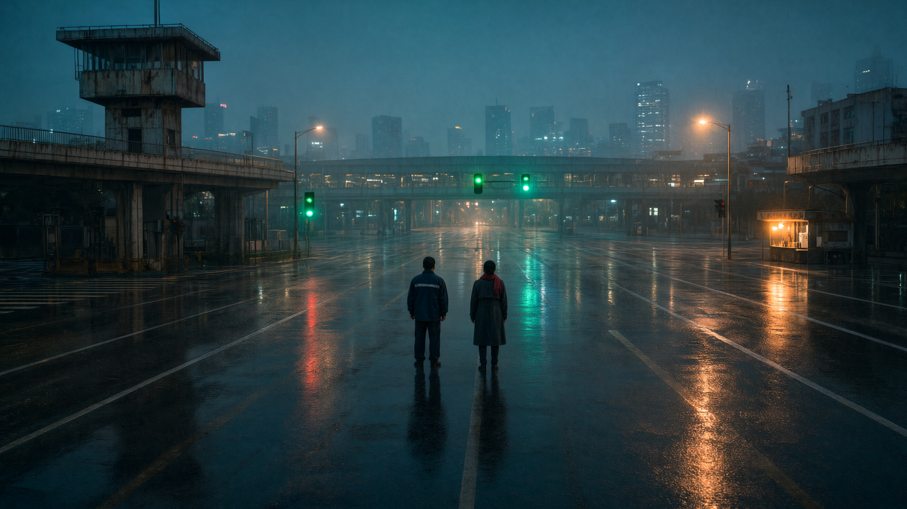

城市每天凌晨 4:17 重启一次；婚姻有一份 30 天的冷静期；陈默守了 22 年的夜班，守成了不回应、不改变的习惯。三个“重启”叠在同一夜。他最后按下的不是“重来”，是“交班”。
城市层面的重启：全城信号失效，必须有人下到路口，用一把物理钥匙把系统重新点亮。关系层面的重启：两人不是回到 18 年前，而是把“旧数据”保留下来，写进新系统。个人层面的重启：一个人承认自己扛不动了，把钥匙交出去。
海州，凌晨 4:17，最后一次人工交班。新系统“灵犀”提前切换，047 号继电器超时，全城信号熄灭。陈默赶到北站路口，遇见“灵犀”的总设计师林曦——也是他 18 年前在同一个路口遇见的人，离婚冷静期的最后一天。旧柜只认他的黄铜钥匙，新系统只认她的权限。两个人隔着一个打开的继电器柜，像隔着一张离婚协议。4:21，绿灯从路口出发，漫过全城。早上 6 点，粥铺。9 点的预约单还在桌上。她问：“新系统会保留旧数据吗？”他说：“会。不然它不知道路该怎么走。”
不是 MV，不是旁白散文。 44 个镜头、72 句短对白、三幕七段；有欲望（守住最后一班/不面对 9 点）、障碍（系统崩溃 + 前妻出现）、回忆（伞与空屋）、选择（交钥匙/不去登记）、回落（粥铺与绿灯）。全片 3:20，净对白约 101 秒，其余交给画面和声音。
画面：青蓝雨夜 + 钠灯暖橙 + 单点信号红；绿色只在 2:38 后出现，绿灯潮是全片唯一饱和峰值。声音：50Hz 城市心跳、三层雨、继电器；黑城 1.5 秒静音；钢琴=林曦，大提琴=陈默，合成器=城市。